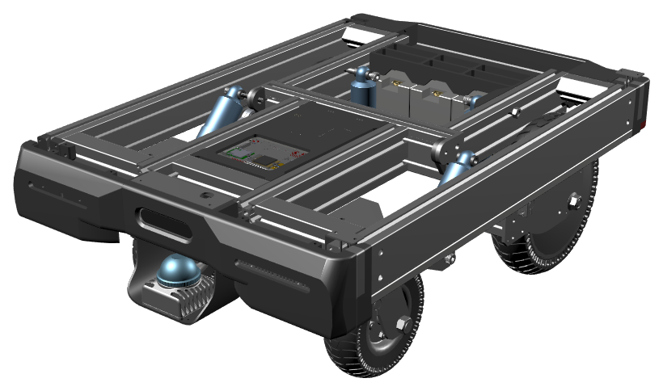
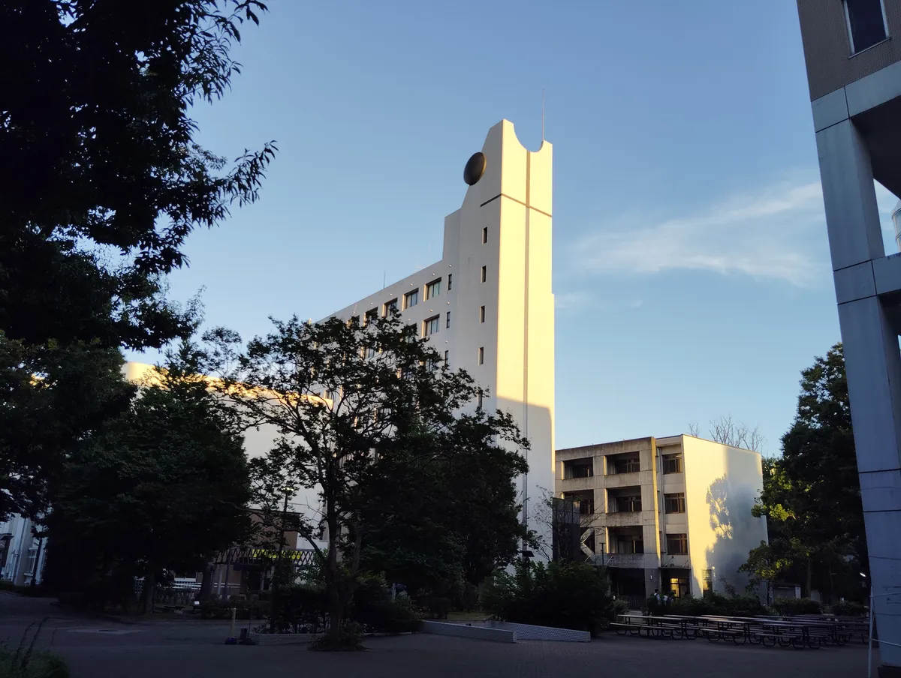
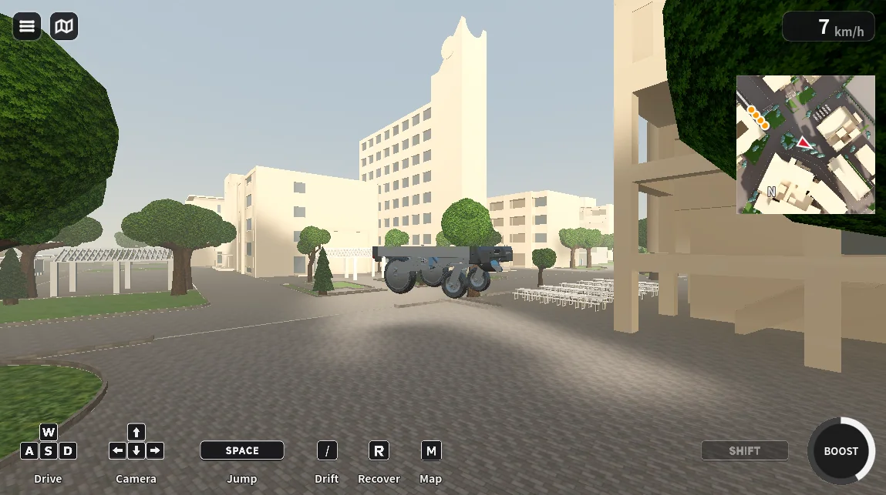

電気通信大学の有志の学生が開発している自動運転AGVを乗り回せるゲームが登場！
電気通信大学のキャンパス内を走り回れ！
動く板とは
動く板は、電気通信大学の有志の学生が開発している自動運転AGVです。
電通大のキャンパスを再現


クレジット
音楽
- 「Fanfare 02」Beau Buckley（OpenGameArt、CC BY-SA 4.0）
- 「Fanfare 1」tcarisland（OpenGameArt、CC BY 4.0）
効果音
- 走行音・段差の音：動く板の実機の録音
- 「20 Rustles of dry leaves」qubodup（OpenGameArt、CC0）
- 「40 CC0 water / splash / slime SFX」rubberduck（OpenGameArt、CC0）
フォント
- Noto Sans JP / Noto Sans CJK JP（SIL Open Font License 1.1）
- VT323（SIL Open Font License 1.1）